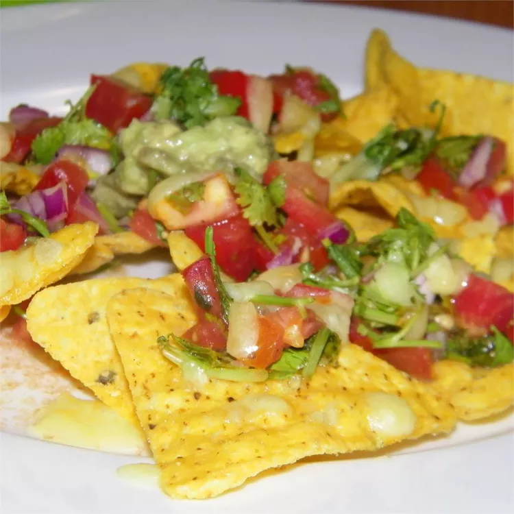

Classic Pub Style Nachos

Description
I got this recipe from summer camp, and when I made them at home, my whole family was impressed.
Layers of tortilla chips and salsa with the works on the side - tastes just like the nachos they serve at
restaurants. Perfect for a party!
Ingredients
- ¼ cup chopped red onion
- 4 tomatoes, seeded and finely chopped
- 1 lime, juiced
- 1 pinch salt and black pepper (Optional)
- 1 (8 ounce) package tortilla chips
- 2 cups shredded Cheddar cheese, divided
- ½ cup sour cream (Optional)
- ½ cup guacamole (Optional)
Steps
- Preheat an oven to 350 degrees F (175 degrees C).
- Mix together the onion, tomatoes, parsley, olive oil, lime juice, salt and pepper in a bowl.
- Spread tortilla chips in a single layer onto a baking sheet, and spoon about 1 teaspoon of the tomato salsa onto each chip. Spread 1 cup of Cheddar cheese over the nachos, top the chips with another teaspoon or so of salsa, and top with the remaining 1 cup of cheese.
- Bake the nachos in the preheated oven until the cheese is bubbling, about 5 minutes. Serve hot with sour cream, guacamole, and any remaining salsa on the side for dipping the chips.